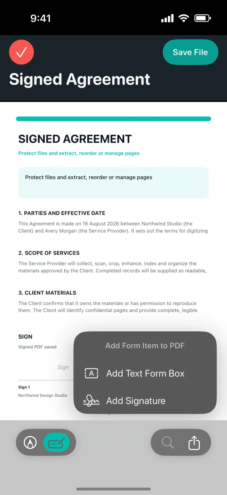

Add a signature where it belongs
Open a PDF, enter the form-editing flow and add a signature item to the page. The signature can be positioned as part of the document instead of being sent as a separate image.
Finish documents securely
Add a signature or text form item, protect sensitive PDFs with a password and share the finished document without leaving the app.


Open a PDF, enter the form-editing flow and add a signature item to the page. The signature can be positioned as part of the document instead of being sent as a separate image.
Add a text form box for names, dates, short answers and other information that needs to sit on top of the existing PDF page.
Create a password-protected PDF before sharing confidential paperwork. Locking is performed locally and produces an encrypted file for the recipient.
A clear three-step workflow
ProScan PDF keeps the action, confirmation and saved file inside one focused workflow.
Choose the document from My Files and open the form-editing controls. The PDF remains visible while you decide whether to add text or a signature.
Choose Add Text Form Box or Add Signature, then position the item on the appropriate page. Review the result before saving the modified PDF.
When the document is ready, use Lock to create a password-protected version or Share to send the file through the standard iOS share sheet.
Built for practical documents
The goal is to complete everyday paperwork without printing, signing and scanning it again. Signatures and text fields are integrated into the PDF workflow you already use for viewing and organizing pages.
Not every document needs encryption, so locking is available as an explicit action. You choose when a PDF should require a password rather than having security applied unexpectedly.
Saving a modified or signed PDF produces a confirmation card so you know the operation finished. Cache invalidation ensures the library and preview are refreshed after a file changes.
Questions, answered
Practical details about how this feature works in ProScan PDF.
Yes. The form-item flow supports text form boxes and signatures on the PDF.
Yes. The Lock action creates a password-protected PDF locally on the device.
Use Share to open the standard iOS share sheet and choose an available destination.
No. The document editing and signing workflow is performed on your device.
Continue the workflow
Your next document is one tap away
No ads. No watermarks.